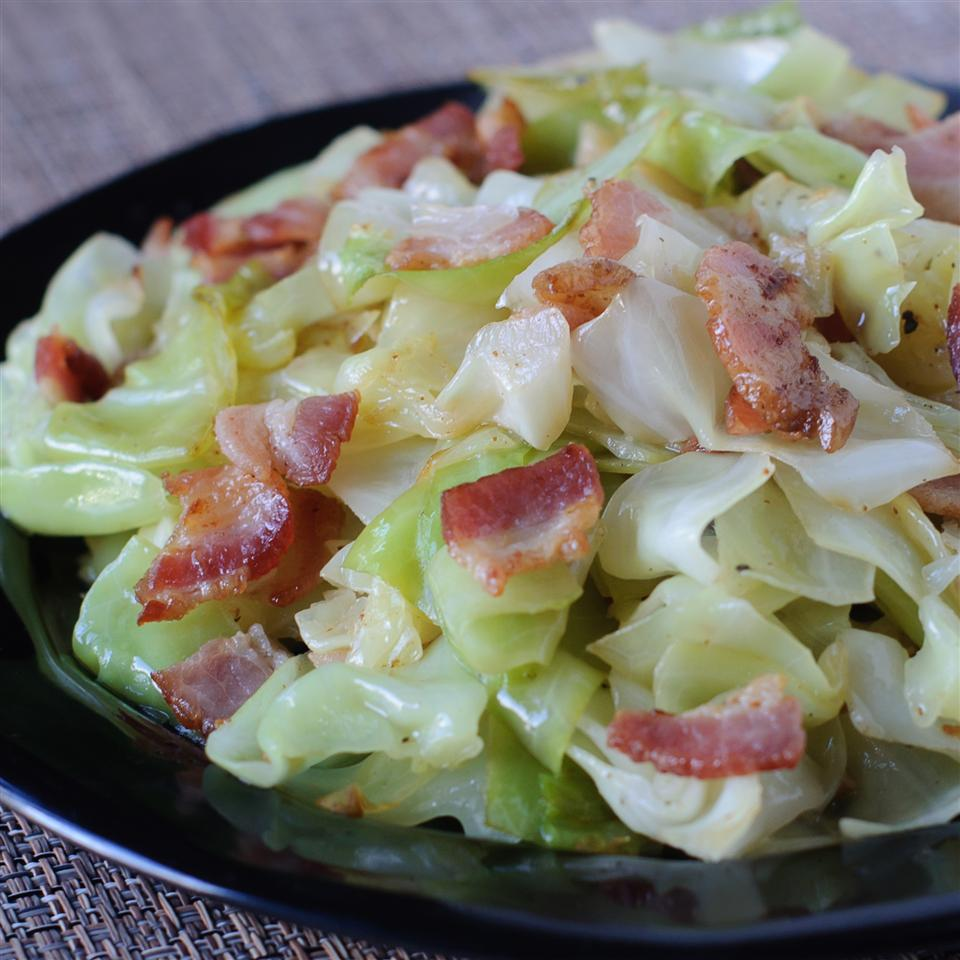

Fried Irish Cabbage with Bacon

Description
Cabbage fried in bacon grease with bacon.
Ingredients
- 1 (12 ounce) package bacon
- ¼ cup bacon drippings
- 1 small head cabbage, cored and finely chopped
- ground black pepper to taste
Steps
- Cook bacon in a deep skillet over medium heat until crisp, 5 to 7 minutes. Remove bacon from skillet and drain on a paper towel-lined plate. Reserve 1/4 cup drippings in skillet.
- Cook and stir cabbage in hot bacon drippings over medium heat until cabbage wilts, 5 to 7 minutes.
- Crumble bacon over cabbage. Stir and simmer until bacon is warmed, 2 to 3 minutes. Season with black pepper.